Explore All Nepal Trekking Packages
Handcrafted itineraries, licensed Sherpa guide leadership, and 100% safety commitment across Nepal's iconic classic circuits and remote wilderness frontiers.
Filter & Search Trekking Packages
Instant results updated in real-timeShowing All 60 Available Treks
Guaranteed Departures • 100% Sherpa Led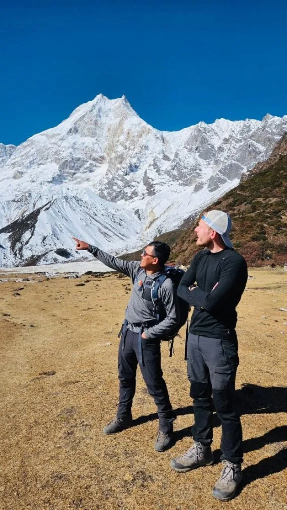
Budget-focused itinerary 12 DaysManaslu Circuit Trek Budget Friendly
Trek the Manaslu Circuit via Pungyen Monastery and Larkya La on a budget-focused itinerary.
 Heli Flyback
11 Days
Heli Flyback
11 Days
Annapurna Base Camp Trek Heli Return
Trek through Ghorepani to Annapurna Base Camp and return to Pokhara by helicopter.
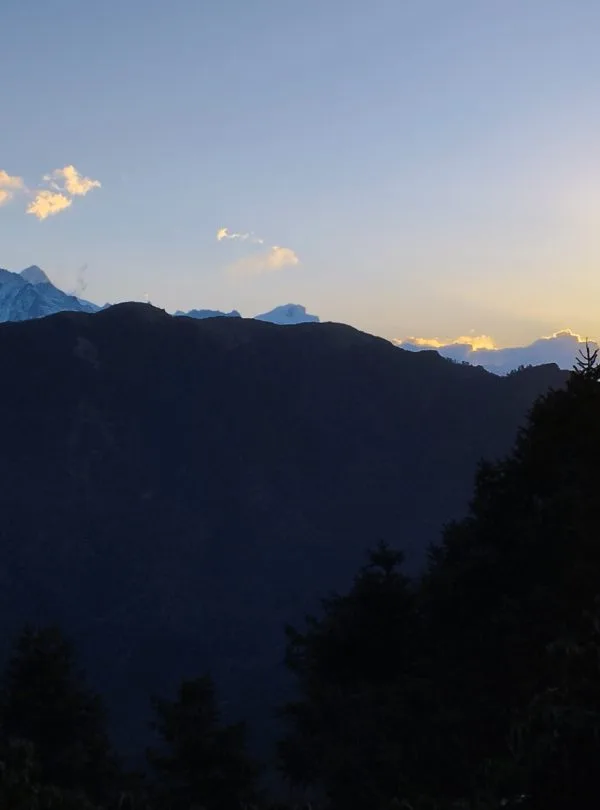
Sunrise and ridge viewpoints 12 DaysGhorepani Poon Hill with Mardi Himal Trek
Enjoy Poon Hill’s sunrise before walking through Gurung villages to Mardi Himal’s upper viewpoint.
 Two trekking routes
13 Days
Two trekking routes
13 Days
ABC With Mardi Himal Trek
Combine Annapurna Base Camp with Mardi Himal’s ridge trails and mountain viewpoints.
 Luxury Signature
9 Days
Luxury Signature
9 Days
Annapurna Luxury Trek
Explore Ghandruk, Landruk and Dhampus with comfortable lodges and flights between Kathmandu and Pokhara.
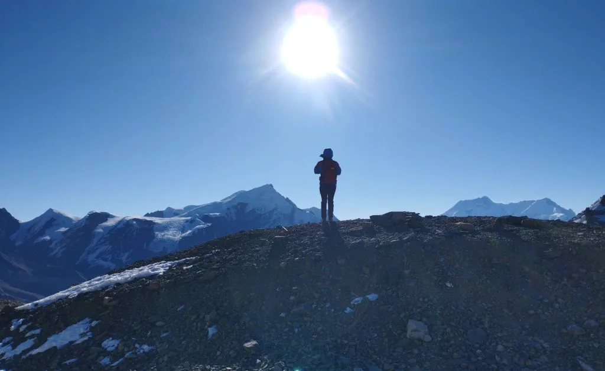
Luxury Signature 13 DaysAnnapurna Circuit Luxury Trek
Cross Thorong La with upgraded stays, private road transfers and a return flight from Pokhara.
 Luxury Signature
14 Days
Luxury Signature
14 Days
Everest Base Camp Luxury Trek
Trek to Everest Base Camp and Kala Patthar with upgraded accommodation where available.
 Luxury Signature
15 Days
Luxury Signature
15 Days
Gokyo Lakes Luxury Trek
Explore Gokyo Lakes and Gokyo Ri with upgraded stays on the lower Khumbu route.
 Heli Flyback
11 Days
Heli Flyback
11 Days
Gokyo Lake Trek with Helicopter Return
Explore Gokyo Lakes and Gokyo Ri, then return to Lukla by helicopter.
 Overland approach and return
17 Days
Overland approach and return
17 Days
Everest Base Camp Trek Without Flight – 17 Day
Reach Everest Base Camp and Kala Patthar using an overland approach through Salleri and Paiyun.
 Peak Expedition
16 Days
Peak Expedition
16 Days
Island Peak Climbing
Trek through the Khumbu Valley to Chhukung and attempt the summit of Island Peak.
 Peak Expedition
18 Days
Peak Expedition
18 Days
Mera Peak Climbing
Follow the Hinku Valley to Khare and climb Mera Peak with acclimatisation and training.
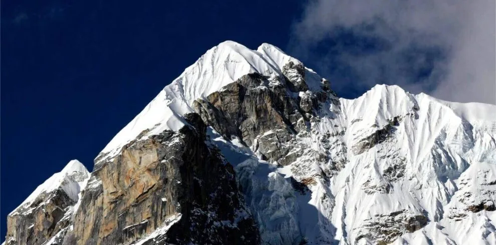
Peak Expedition 16 DaysLobuche Peak Climbing With Everest Base Camp
Trek through the Khumbu, visit Kala Patthar and attempt the summit of Lobuche East.
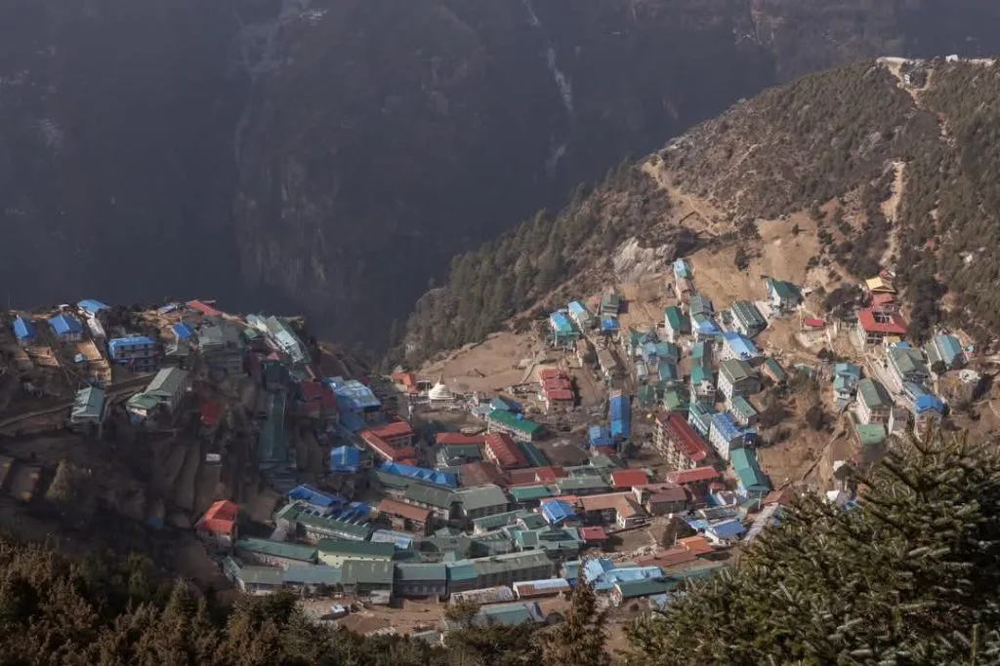
Peak Expedition 20 DaysEBC Three High Passes with Island Peak Climbing
Combine the three Everest high passes, Everest Base Camp and an Island Peak summit attempt.
 Short Trek
9 Days
Short Trek
9 Days
Short Annapurna Base Camp Trek
Reach Annapurna Base Camp on a shorter route through Sinuwa and Deurali.
 Village-based trekking
8 Days
Village-based trekking
8 Days
Annapurna View Trek
Walk through Australian Camp, Landruk and Ghandruk for Annapurna views and village life.
 Two acclimatisation stops
14 Days
Two acclimatisation stops
14 Days
Everest Base Camp Trek – 14 Day
Follow Sherpa village trails to Everest Base Camp and climb Kala Patthar for mountain views.
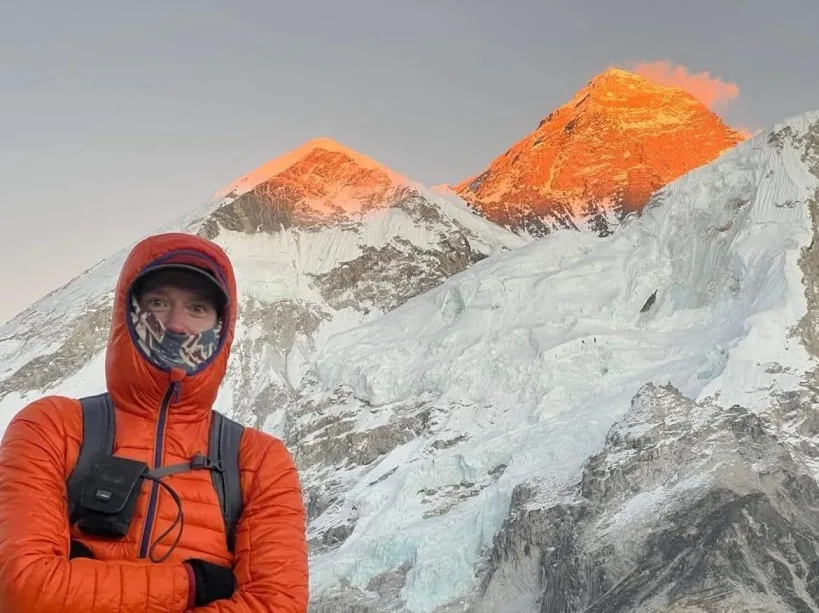
Buffer day & KTM tour 16 DaysEverest Base Camp Trek — 16 Days
Comprehensive Khumbu expedition featuring Kathmandu UNESCO tour, 2 acclimatisation hikes, and Lukla weather buffer day.
 Manang acclimatisation
14 Days
Manang acclimatisation
14 Days
Annapurna Circuit Trek – 14 Day
Follow the Marsyangdi Valley through Manang and cross Thorong La to Muktinath and Jomsom.
 Valley trekking
10 Days
Valley trekking
10 Days
Langtang Valley Trek – 10 Days
Follow the Langtang Valley to Kyanjin Gompa, with optional hikes to nearby mountain viewpoints.
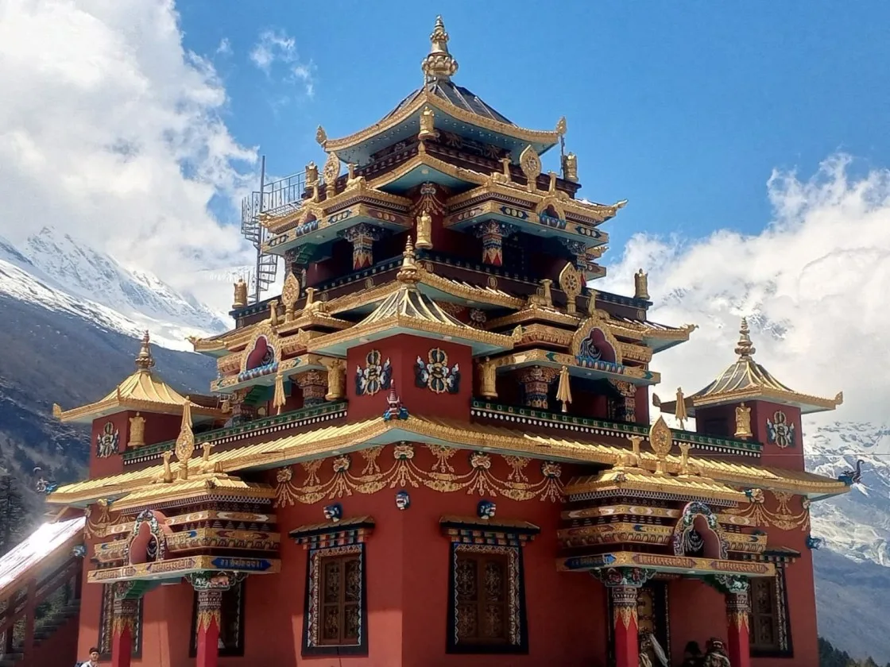
High pass crossing 14 DaysManaslu Circuit Trek
Follow the Budhi Gandaki Valley through mountain villages and cross Larkya La to Bimthang.
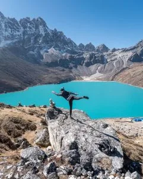
High pass crossing 17 DaysEBC Chola Pass Gokyo Trek
Combine Everest Base Camp and Kala Patthar with Cho La Pass, Gokyo Lakes and Gokyo Ri.
 Sunrise hiking
10 Days
Sunrise hiking
10 Days
Ghorepani Poon Hill Trek
Watch sunrise from Poon Hill and explore Ghorepani, Tadapani and Ghandruk.
 Dry valley landscapes
16 Days
Dry valley landscapes
16 Days
Upper Mustang Trek
Walk through Mustang’s dry valleys and walled villages to Lo Manthang and Chhoser Caves.
 Jeep-based exploration
12 Days
Jeep-based exploration
12 Days
Upper Mustang Jeep Tour
Explore Upper Mustang by jeep, visiting Lo Manthang, Chosar Caves and traditional villages.
 Festival-centred itinerary
17 Days
Festival-centred itinerary
17 Days
Upper Mustang Tiji Festival Trek
Experience Tiji Festival in Lo Manthang and explore Mustang’s villages, caves and monasteries.
Annapurna Region
10 Days
Annapurna Base Camp (ABC)
Trek through Machhapuchhre (Fishtail) Base Camp into the 360-degree mountain amphitheater of Annapurna Sanctuary.
 Three high pass crossings
21 Days
Three high pass crossings
21 Days
Everest Three High Passes Trek
Cross Kongma La, Cho La and Renjo La while visiting Everest Base Camp and Gokyo Lakes.
 Lake-focused itinerary
12 Days
Lake-focused itinerary
12 Days
Gokyo Lakes Trek
Follow the Gokyo Valley to its mountain lakes and climb Gokyo Ri for Himalayan views.
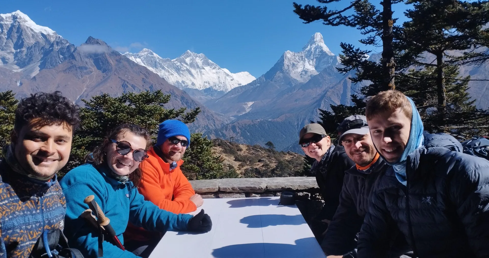
Short Khumbu itinerary 7 DaysEverest View Trek – 7 Days
Explore Namche Bazaar and hike to Everest View Hotel on a short Khumbu trek.
High pass crossing
17 Days
Everest Base Camp via Gokyo Lakes
Combine Everest Base Camp and Kala Patthar with Cho La Pass, Gokyo Lakes and Gokyo Ri.
 Forest-to-ridge walking
9 Days
Forest-to-ridge walking
9 Days
Mardi Himal Trek – 9 Day
Follow forest trails and open ridges to Mardi Himal’s viewpoints beneath Machhapuchhre.
Ridge walking
11 Days
Khopra Ridge Trek
Walk to Khopra Ridge, visit Khayar Lake and finish with sunrise at Poon Hill.
Village exploration
13 Days
Nar Phu Valley Trek
Explore Nar and Phu villages before crossing Kang La Pass into the Annapurna valley.
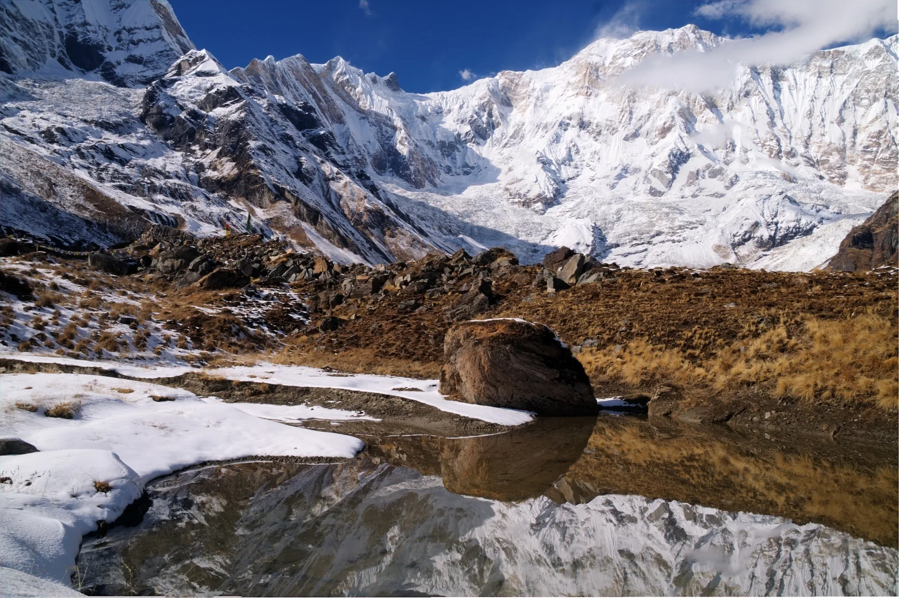
Extended circuit 17 DaysClassic Annapurna Circuit Trek
Cross Thorong La and continue through Marpha and Tatopani to Ghorepani and Poon Hill.
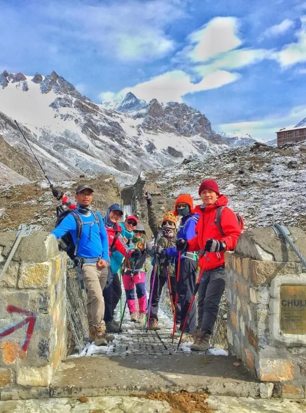
Lake and high pass combination 18 DaysAnnapurna Circuit with Tilicho Lake
Add Tilicho Lake to the Annapurna Circuit before crossing Thorong La to Muktinath.
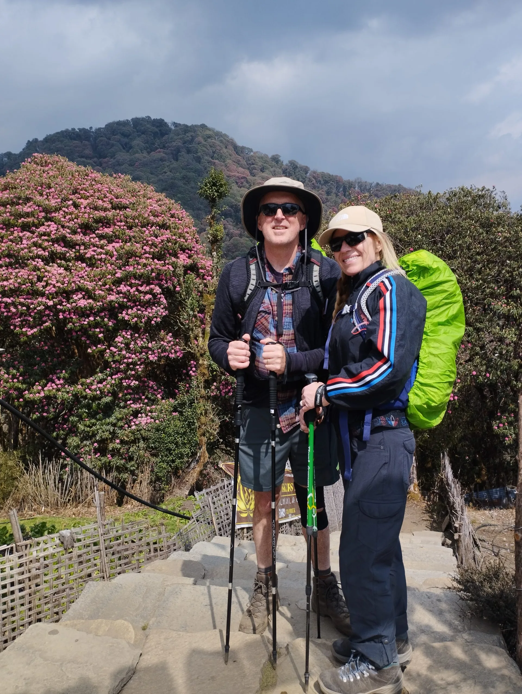
Sunrise viewpoint 13 DaysAnnapurna Base Camp Trek Via Poon Hill
Walk through Ghorepani and Poon Hill to Annapurna Base Camp, returning through Jhinu Danda.
Langtang Region
7 Days
Gosaikunda Lake Trek
Pilgrimage trek to sacred alpine lakes at 4,380m and Lauribina Pass.
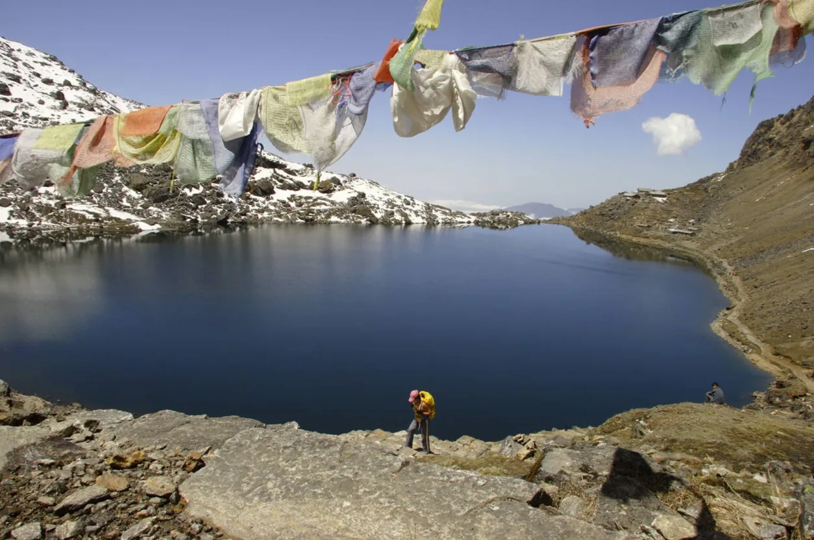
Sacred lake visit 6 DaysGosaikunda Trek
Walk from Dhunche through forest and highland trails to the sacred Gosaikunda Lake.
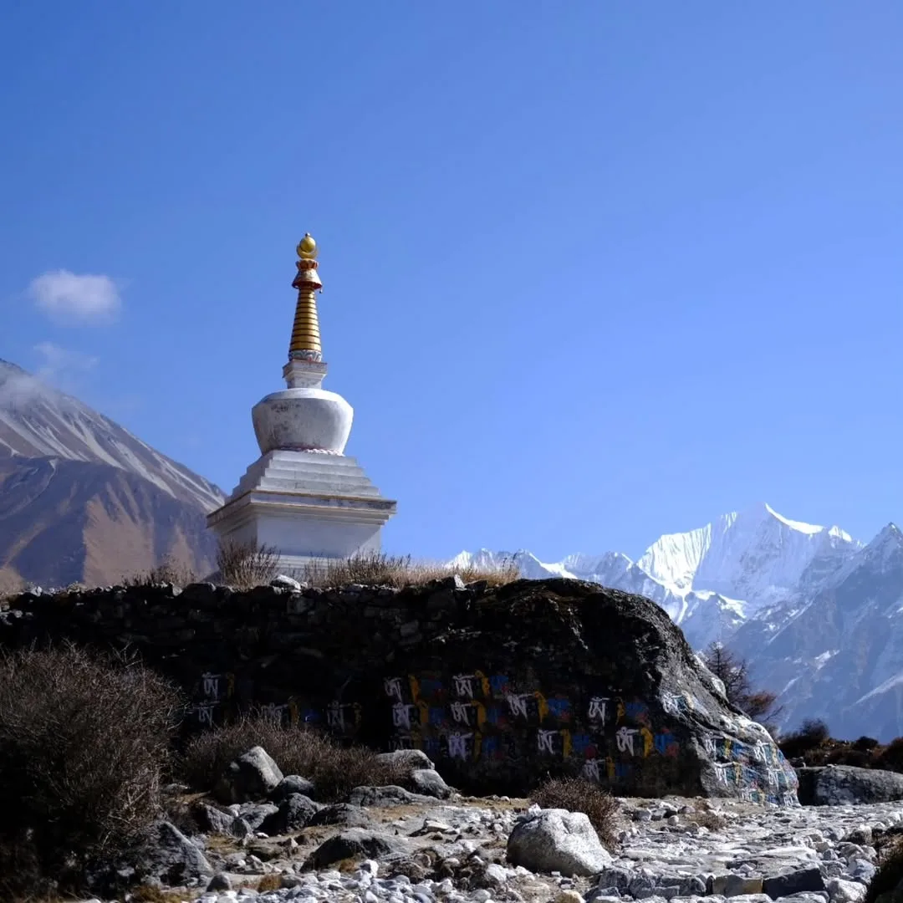
Tamang cultural experience 10 DaysTamang Heritage Trail
Explore Tamang villages through Gatlang, Tatopani, Thuman, Timure and Briddim.
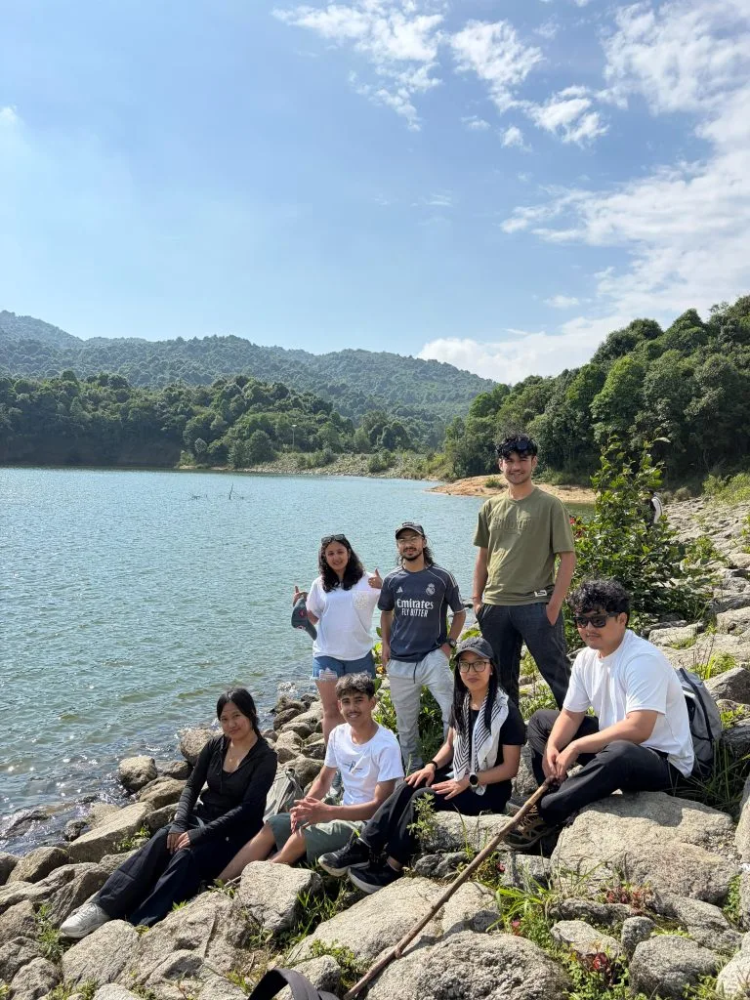
Langtang Region 6 DaysHelambu Trek
Accessible cultural circuit north of Kathmandu with Hyolmo Buddhist villages.
Monastery-focused journey
14 Days
Tsum Valley Trek
Explore Tsum Valley’s villages and monasteries, reaching Mu Gompa before retracing the valley.
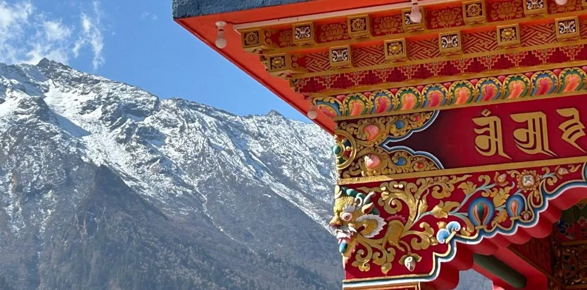
Combined valley itinerary 20 DaysManaslu Tsum Valley Trek
Combine Tsum Valley’s monasteries with the Manaslu Circuit and the crossing of Larkya La.
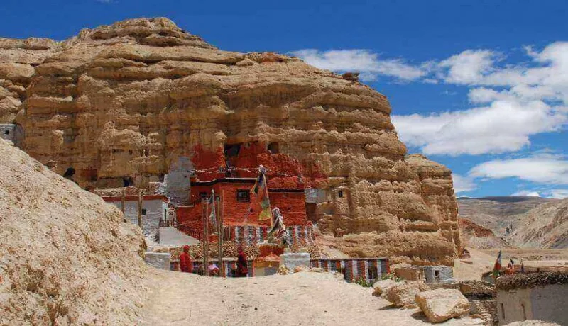
Mustang Region 8 DaysLower Mustang Trek
Muktinath temple, Marpha apple orchards, and Kali Gandaki gorge walk.
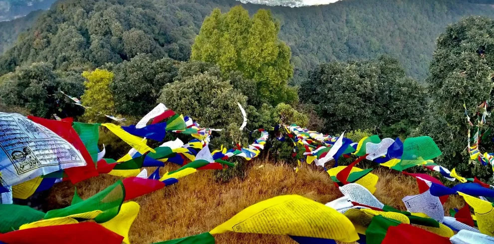
Peak Expedition 10 DaysPikey Peak Trek
Climb Pikey Peak at sunrise and visit Sherpa villages and Thupten Chholing Monastery.
Village stays
9 Days
Mohare Danda Trek
Walk through Banskharka and Nangi to Mohare Danda for mountain views and village stays.
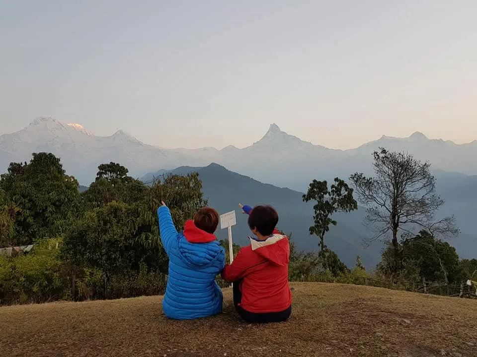
Hill walking 8 DaysPanchase Trek
Walk through villages above Pokhara to Panchase for mountain views and quiet forest trails.
 Remote Wilderness
9 Days
Remote Wilderness
9 Days
Ruby Valley Trek
Hidden Ganesh Himal trail passing zinc and ruby mines and Gurung villages.
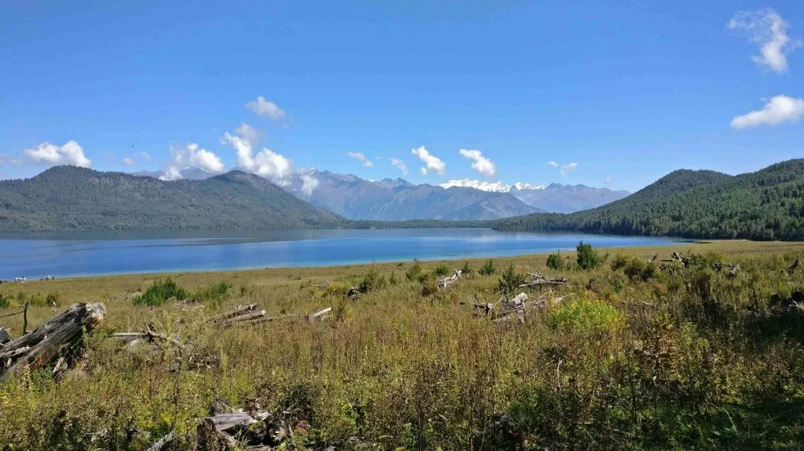
Remote Wilderness 10 DaysRara Lake Trek
Journey to Nepal's largest & deepest alpine lake in remote western Jumla.
Remote Wilderness
18 Days
Makalu Base Camp Trek
Wild, pristine trail to the base of the world's 5th highest mountain 5,250m.
 Remote Wilderness
22 Days
Remote Wilderness
22 Days
Kanchenjunga Base Camp Trek
Far-eastern wilderness expedition to North & South Kanchenjunga Base Camps.
 Two base camp areas
20 Days
Two base camp areas
20 Days
Kanchenjunga Circuit Trek
Explore both Kanchenjunga base camps, connecting Ghunsa and the southern valleys across high passes.
 Two base camp areas
20 Days
Two base camp areas
20 Days
Kanchenjunga Circuit Trek Without Flight
Visit Kanchenjunga’s north and south base camps using road travel to and from Taplejung.
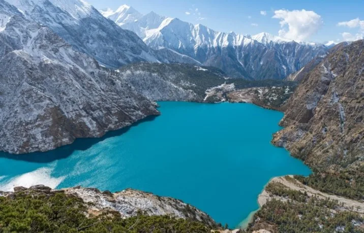
Restricted Area 18 DaysLower Dolpo Trek
Circuit across crystal turquoise Shey Phoksundo Lake, Bon Po villages, and Numa La Pass (5,309m).
 Trans-Himalayan Expedition
24 Days
Trans-Himalayan Expedition
24 Days
Upper Dolpo Trek
The legendary 24-day Himalayan wilderness odyssey to Shey Gompa, Crystal Mountain, and Kang La (5,360m).
Valley Rim Classic
3 Days
Chisapani Nagarkot Trek
Hike through Shivapuri National Park to Chisapani pass and witness sunrise over Everest from Nagarkot.
 Remote Wilderness
18 Days
Remote Wilderness
18 Days
Dhaulagiri Circuit Trek
Extreme high-altitude expedition across French Pass 5,360m and Dhaulagiri glacier.
 Remote Wilderness
15 Days
Remote Wilderness
15 Days
Rolwaling Valley Trek
Trek past Tsho Rolpa glacial lake and Tashi Lapcha Pass 5,755m into Khumbu.
 Peak Expedition
12 Days
Peak Expedition
12 Days
Yala Peak Climbing
Trek through the Langtang Valley to Kyanjin Gompa and climb Yala Peak.
Grand Traverse
16 Days
Langtang–Gosaikunda–Helambu Trek
Link the Langtang Valley, sacred Gosaikunda Lake and Helambu villages across Lauribina La Pass.
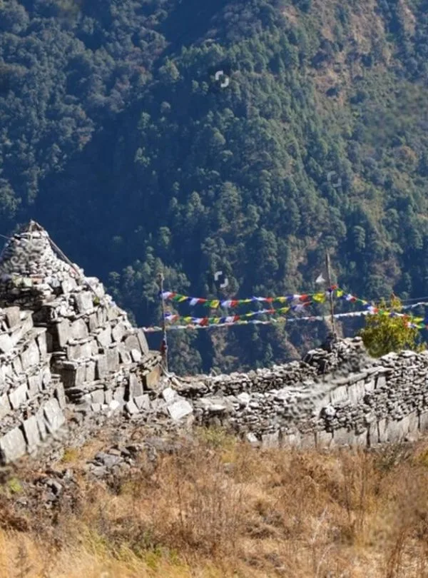
Cultural and mountain route 14 DaysTamang Heritage Trail With Langtang Valley Trek
Combine Tamang villages with the Langtang Valley, Kyanjin Gompa and mountain viewpoint hikes.
No matching trekking packages found
We couldn't find any trek packages matching your current filter criteria. Try broadening your duration, difficulty, or region selections.
Don't see your dream trekking route?
We specialize in tailor-made Himalayan itineraries, private departures, custom side-trips, and luxury helicopter returns.
Plan A Custom Itinerary